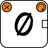

The CrazyBioWorkFlow is a simple tool to create workflows in the context of the CrazyBioComputing mini-games.
Note: You can't use CrazyBioWorkFlow as a real, independent workflow tool.
1. Anatomy of a token
|
|
| Fig.1.1: Anatomy of a token" |
1.1. Display the Title
|
|
| Fig.1.2: Display the title by moving the mouse cursor on the token. No click is required. This works in the sandbox and in the board." |
1.2. Display The contents
|
|
| Fig.1.3: Display its contents by left clicking in the center of the token triggering the opening of a popup window. This only works when the token is in the board. |
1.3. Rotate the token
|
|
| Fig.1.4: By left clicking on the top right button, the token is rotated clockwise. |
2. Behavior of a token
By default, all the tokens available in a mini-game are located in the sandbox. They are inactivated meaning that you can't click on them to see their contents. However, by hovering the mouse cursor, the title of the token is still visible.
2.1. Activation
To activate a token, drag and drop it on the gameboard as shown in Fig. 2.1.
|
|
| Fig. 2.1: Activation of a token by a "click and drop" |
2.2. Creation of a workflow
The purpose of this tool is to put tokens side by side to build a workflow.
|
|
| Fig.2.2: Creation of a workflow by appending tokens side by side. The green arrow indicates that the two tokens are locked. |
3. List of tokens
- System Tokens
- This is a mandatory token used to display the results of the workflow. By clicking on it, you trigger the computation of the workflow. A dialog window warns you about the results of the workflow you built.
-  Void token. You can't have an empty input connector in a workflow. The Void allows to lock this connector.
- Anything token. This token is only used for tutorials, debugging and have no special meaning.
 Token First. Used in combination of token 'Second'.
Token First. Used in combination of token 'Second'. Token Second. Used in combination of token 'First'. See description above
Token Second. Used in combination of token 'First'. See description above
- Input Tokens
- Text input.
- Form input. This token contains a form (textfield, radio boxes, etc.) that you must fill in.
- Tool Tokens
- Basic tool.Can have a max of three inputs and only one output.
- Form. This token contains a form (textfield, radio boxes, etc.) that you must fill in for tuning parameters.
- Filter. This token contains a form (textfield, radio boxes, etc.) that you must fill in for tuning parameters.
- Settings. This token contains a form (textfield, radio boxes, etc.) that you must fill in for tuning parameters.